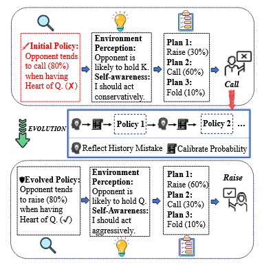
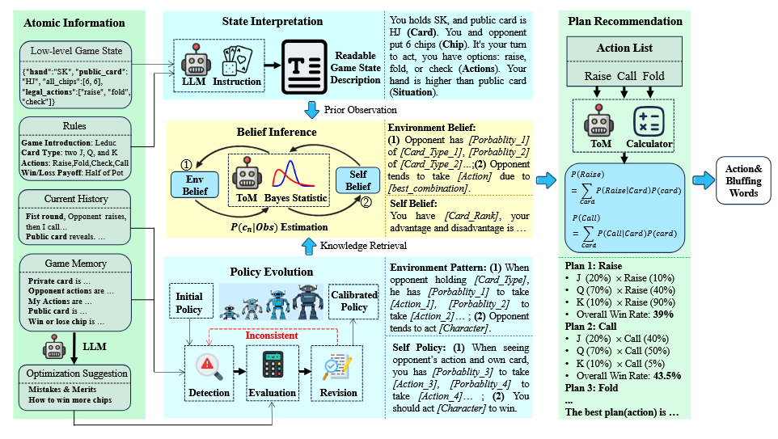

Literature Review: PolicyEvol-Agent: Evolving Policy via Environment Perception and Self-Awareness with Theory of Mind
Summary
- PolicyEvol-Agent introduces a novel LLM-empowered agent framework for multi-agent, imperfect-information games, specifically tested on Leduc Hold’em.
- The agent systematically integrates policy evolution, environmental perception, and self-awareness with a Theory of Mind (ToM) approach, enabling dynamic adaptation and human-like strategic behavior.
- The framework is composed of four main modules:
- Observation Interpretation: Converts low-level game states into human-readable text for LLM processing.
- Policy Evolution: Adjusts policies through memory and reflection, calibrating action probabilities based on game history and feedback.
- Multifaceted Belief Generation: Employs ToM to infer both environmental (opponent) and self-beliefs, enhancing situational awareness.
- Plan Recommendation: Uses LLM reasoning to generate and evaluate action plans, estimating win rates and expected chip gains.
- PolicyEvol-Agent continuously refines its strategies through self-reflection and adaptation, mimicking human learning and psychological reasoning in competitive scenarios.
- Experiments on Leduc Hold’em show that PolicyEvol-Agent outperforms both traditional RL-based models and recent agent-based methods, including the state-of-the-art Suspicion-Agent, especially when using the same LLM backend.
- Ablation studies demonstrate that plan recommendation and belief generation are critical to performance, while reflection and policy evolution also provide significant benefits.
- The agent demonstrates strategic behaviors such as bluffing, deception, and flexible folding, aligning its play style with human-like tactics in response to dynamic game states.

Figure 1: PolicyEvol-Agent cognitive process reacting to opponent actions, showing policy evolution through reasoning, planning, and reflection.
Example
Scenario: PolicyEvol-Agent plays Leduc Hold’em against an opponent.
- Initial Policy: The agent estimates the opponent tends to call (80%) when holding the Queen of Hearts.
- Environment Perception: Observes that the opponent is likely to hold a King.
- Self-Awareness: Decides to act conservatively.
- Plan Recommendation: Considers three plans-raise (30%), call (60%), fold (10%)-and chooses to call.
- Reflection and Evolution: After observing the outcome and reflecting on mistakes, the agent updates its policy, now estimating the opponent tends to raise (80%) with the Queen of Hearts.
- Revised Strategy: With updated beliefs, the agent now acts more aggressively, shifting the probabilities for raise (60%), call (30%), fold (10%).
This iterative process continues, with the agent dynamically adjusting its strategies based on ongoing perception, belief inference, and reflective analysis.

Figure 2: Overview of PolicyEvol-Agent’s four cognitive modules and their interaction.
Ratings
| Category | Score | Rationale |
|---|---|---|
| Novelty | 3 | Introduces a new approach to policy evolution in LLM agents with integrated ToM reasoning, but it’s unclear how this differentiates from non-ToM reasoning, bringing the suspicion that the term is brought on as a keyword filler. |
| Technical Contribution | 4 | Presents a modular, technically robust framework with empirical validation and ablation. |
| Readability | 3.5 | Generally clear and well-illustrated, with detailed prompts and figures. Minor Typos. |
Enjoy Reading This Article?
Here are some more articles you might like to read next: